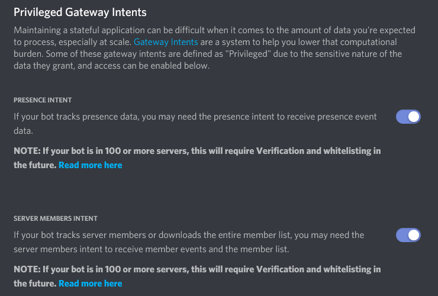

버전 1.5에 추가.
게이트웨이 인텐트의 시작¶
버전 1.5에서 Intents가 소개되었습니다. 이것은 봇을 작성하는 것에서의 급진적인 변화입니다. 인텐트는 기본적으로 봇이 특정 버킷이나 이벤트를 받도록 해줍니다. 각각의 인텐트에 해당하는 이벤트들은 Intents 문서의 개인 속성에 문서화되어있습니다.
이 인텐트들은 Client나 이것의 서브클래스(AutoShardedClient, AutoShardedBot, Bot)의 컨스트럭터에 intents 전달인자로 전달됩니다.
만약에 인텐트가 전달되지 않았다면, 이 라이브러리는 기본으로 현재 Privileged Intent(제한된 인텐트)인 Intents.members와 Intents.presences를 제외한 모든 인텐트를 켭니다.
어떤 인텐트가 필요한가요?¶
당신의 봇에 필요한 인텐트는 당신만이 알 수 있습니다. Intents 클래스의 각각의 속성들은 어떤 events와 일치하는지와 어떤 캐시를 활성화하는지 문서화합니다.
예를 들면, 만약에 presences와 typing과 같은 대량의 이벤트 없이 작동하는 봇을 원한다면 이렇게 할 수 있습니다:
import discord
intents = discord.Intents.default()
intents.typing = False
intents.presences = False
# Somewhere else:
# client = discord.Client(intents=intents)
# or
# from discord.ext import commands
# bot = commands.Bot(command_prefix='!', intents=intents)
참고로 Intents.members는 Privileged Intent(제한된 인텐트) 이므로 켜지지 않습니다.
또다른 예시로 메시지와 길드 정보만 처리하는 봇은 다음과 같습니다:
import discord
intents = discord.Intents(messages=True, guilds=True)
# If you also want reaction events enable the following:
# intents.reactions = True
# Somewhere else:
# client = discord.Client(intents=intents)
# or
# from discord.ext import commands
# bot = commands.Bot(command_prefix='!', intents=intents)
Privileged Intent(제한된 인텐트)¶
봇 소유자가 인텐트를 특정시켜야 하는 API 변경과 함께, 일부 인텐트는 더 추가 제한이 있고 추가적인 절차가 필요합니다. 이런 인텐트들을 Privileged Intent(제한된 인텐트)라고 합니다.
Privileged Intent(제한된 인텐트)는 Developer Portal에서 수동으로 활성화를 해주어야 합니다. 활성화를 위해서는 다음과 같이 해야 합니다:
디스코드 웹사이트 에 로그인했는지 확인하세요.
애플리케이션 페이지 로 이동합니다.
Privileged Intent(제한된 인텐트)를 활성화 할 봇을 클릭하세요.
화면 왼쪽의 Bot 탭으로 이동합니다.

《Privileged Gateway Intents》 부분으로 스크롤하고 원하는 인텐트를 활성화하세요.

경고
봇의 길드수가 100을 넘었을 때 Privileged Intent(제한된 인텐트)를 활성화하기 위해서는 봇 인증 과정을 거쳐야 합니다. 만약에 봇이 이미 인증되었고 Privileged Intent(제한된 인텐트)를 활성화하고 싶다면 디스코드 문의 에 문의해서 인텐트 활성화에 대해 말해야 합니다.
참고
Developer Portal에서 인텐트를 활성화하더라도, 봇 코드에서도 이 인텐트들을 활성화 해야합니다.
Privileged Intent(제한된 인텐트)가 꼭 필요한가요?¶
다음은 특정한 Privileged Intent(제한된 인텐트)가 필요한지 볼 수 있는 간단한 체크리스트입니다.
Presence 인텐트¶
맴버의 상태를 추척하기 위해
Member.status를 사용하나요?맴버의 활동을 확인하기 위해
Member.activity또는Member.activities를 사용하나요?
Member 인텐트¶
Whether you track member joins or member leaves, corresponds to
on_member_join()andon_member_remove()events.Whether you want to track member updates such as nickname or role changes.
Whether you want to track user updates such as usernames, avatars, discriminators, etc.
Whether you want to request the guild member list through
Guild.chunk()orGuild.fetch_members().Whether you want high accuracy member cache under
Guild.members.
Member Cache¶
Along with intents, Discord now further restricts the ability to cache members and expects bot authors to cache as little as is necessary. However, to properly maintain a cache the Intents.members intent is required in order to track the members who left and properly evict them.
To aid with member cache where we don’t need members to be cached, the library now has a MemberCacheFlags flag to control the member cache. The documentation page for the class goes over the specific policies that are possible.
It should be noted that certain things do not need a member cache since Discord will provide full member information if possible. For example:
on_message()will haveMessage.authorbe a member even if cache is disabled.on_voice_state_update()will have thememberparameter be a member even if cache is disabled.on_reaction_add()will have theuserparameter be a member even if cache is disabled.on_raw_reaction_add()will haveRawReactionActionEvent.memberbe a member even if cache is disabled.The reaction removal events do not have the member information. This is a Discord limitation.
Other events that take a Member will require the use of the member cache. If absolute accuracy over the member cache is desirable, then it is advisable to have the Intents.members intent enabled.
Retrieving Members¶
If cache is disabled or you disable chunking guilds at startup, we might still need a way to load members. The library offers a few ways to do this:
Guild.query_members()Used to query members by a prefix matching nickname or username.
This can also be used to query members by their user ID.
This uses the gateway and not the HTTP.
Guild.chunk()This can be used to fetch the entire member list through the gateway.
Guild.fetch_member()Used to fetch a member by ID through the HTTP API.
Guild.fetch_members()used to fetch a large number of members through the HTTP API.
It should be noted that the gateway has a strict rate limit of 120 requests per 60 seconds.
Troubleshooting¶
Some common issues relating to the mandatory intent change.
Where’d my members go?¶
Due to an API change Discord is now forcing developers who want member caching to explicitly opt-in to it. This is a Discord mandated change and there is no way to bypass it. In order to get members back you have to explicitly enable the members privileged intent and change the Intents.members attribute to true.
For example:
import discord
intents = discord.Intents.default()
intents.members = True
# Somewhere else:
# client = discord.Client(intents=intents)
# or
# from discord.ext import commands
# bot = commands.Bot(command_prefix='!', intents=intents)
Why does on_ready take so long to fire?¶
As part of the API change regarding intents, Discord also changed how members are loaded in the beginning. Originally the library could request 75 guilds at once and only request members from guilds that have the Guild.large attribute set to True. With the new intent changes, Discord mandates that we can only send 1 guild per request. This causes a 75x slowdown which is further compounded by the fact that all guilds, not just large guilds are being requested.
There are a few solutions to fix this.
The first solution is to request the privileged presences intent along with the privileged members intent and enable both of them. This allows the initial member list to contain online members just like the old gateway. Note that we’re still limited to 1 guild per request but the number of guilds we request is significantly reduced.
The second solution is to disable member chunking by setting chunk_guilds_at_startup to False when constructing a client. Then, when chunking for a guild is necessary you can use the various techniques to retrieve members.
To illustrate the slowdown caused the API change, take a bot who is in 840 guilds and 95 of these guilds are 《large》 (over 250 members).
Under the original system this would result in 2 requests to fetch the member list (75 guilds, 20 guilds) roughly taking 60 seconds. With Intents.members but not Intents.presences this requires 840 requests, with a rate limit of 120 requests per 60 seconds means that due to waiting for the rate limit it totals to around 7 minutes of waiting for the rate limit to fetch all the members. With both Intents.members and Intents.presences we mostly get the old behaviour so we’re only required to request for the 95 guilds that are large, this is slightly less than our rate limit so it’s close to the original timing to fetch the member list.
Unfortunately due to this change being required from Discord there is nothing that the library can do to mitigate this.
I don’t like this, can I go back?¶
For now, the old gateway will still work so downgrading to discord.py v1.4 is still possible and will continue to be supported until Discord officially kills the v6 gateway, which is imminent. However it is paramount that for the future of your bot that you upgrade your code to the new way things are done.
To downgrade you can do the following:
python3 -m pip install -U "discord.py>=1.4,<1.5"
On Windows use py -3 instead of python3.
경고
There is no currently set date in which the old gateway will stop working so it is recommended to update your code instead.
If you truly dislike the direction Discord is going with their API, you can contact them via support